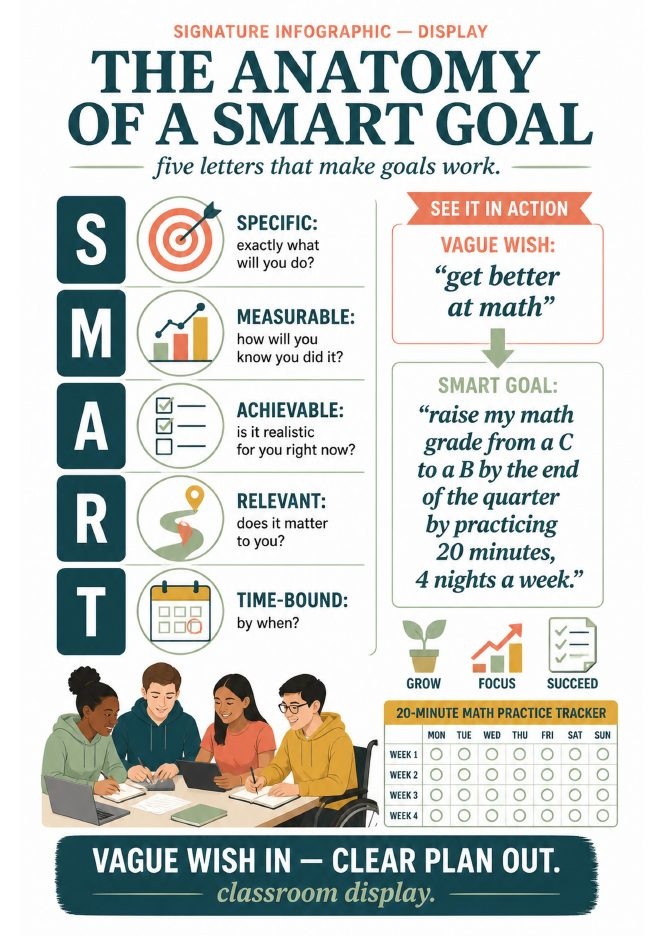
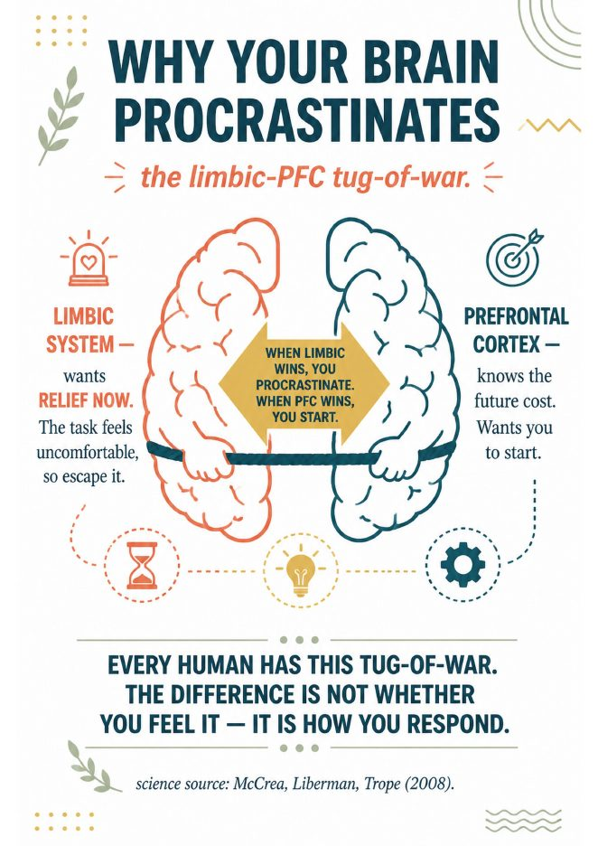
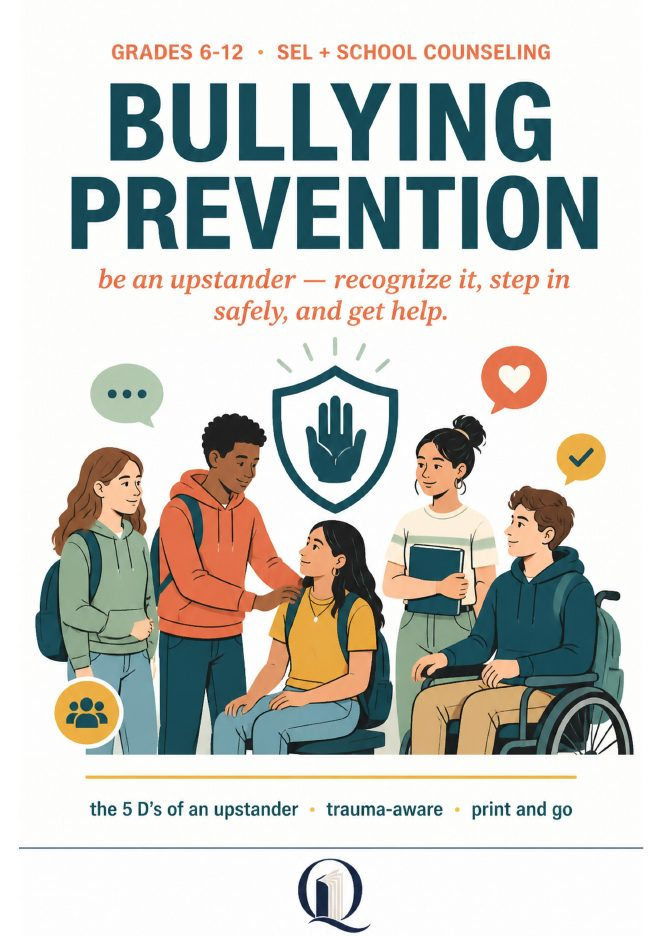
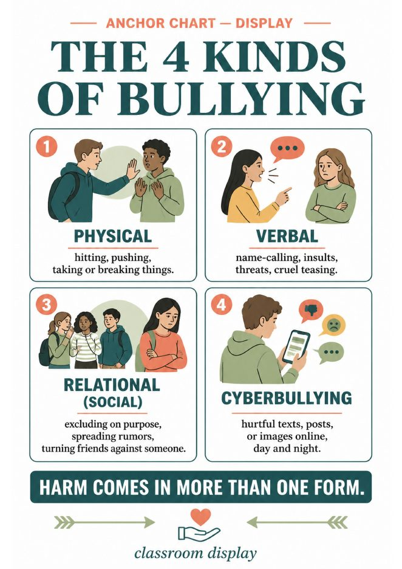
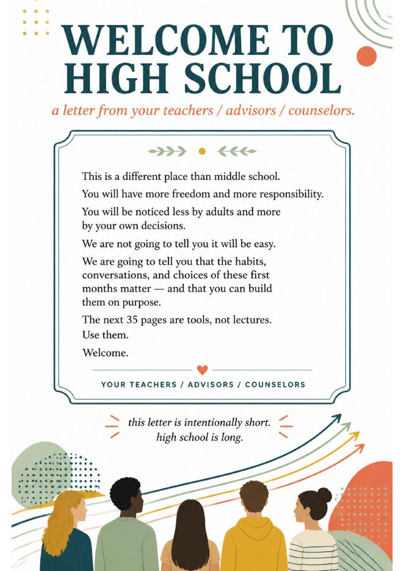
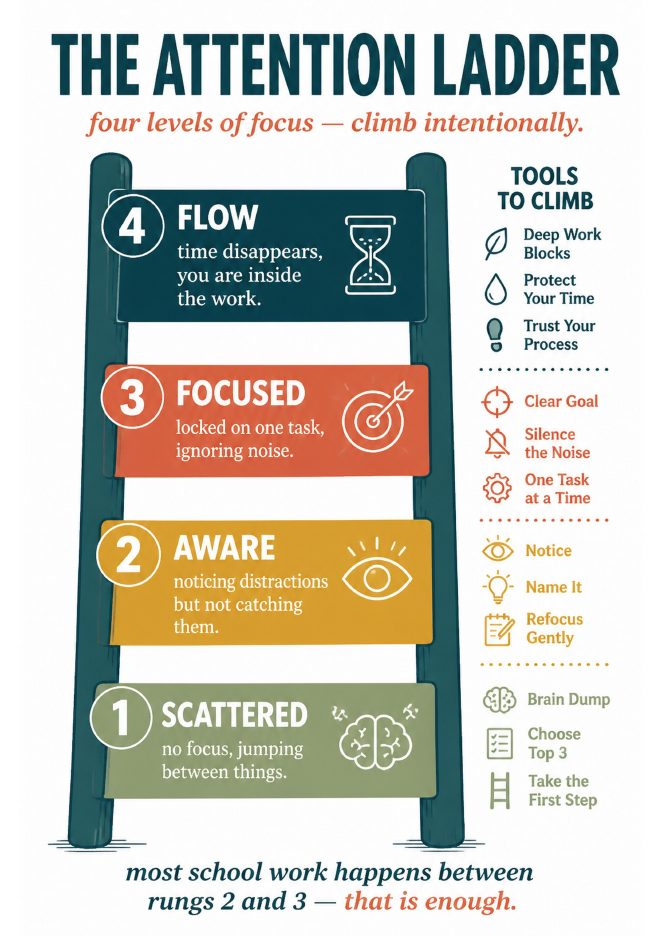
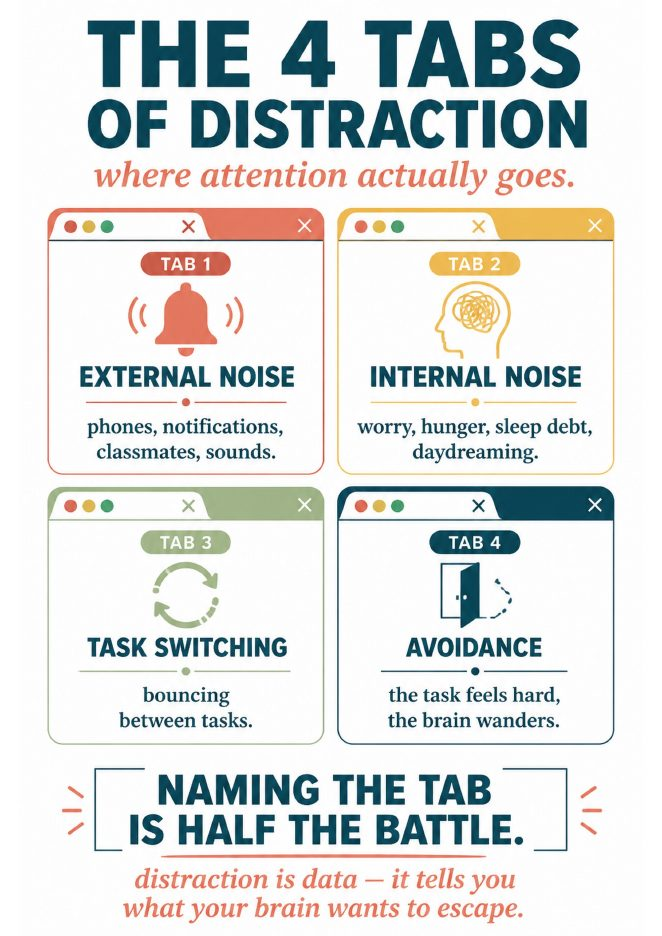
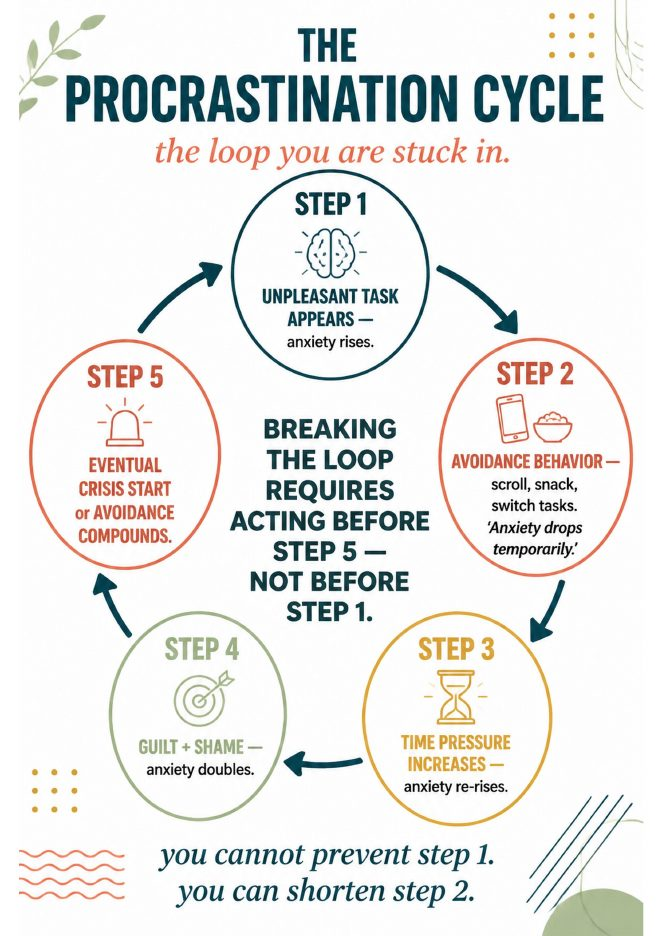

Quirepress
QuirepressPrint-and-go units · grades 6–12
The lessons nobody gave you a textbook for.
Study skills, SEL, counseling, digital wellness and life skills. Every unit opens with a one-page teacher guide, a one-minute quickstart and a signature infographic, so you can teach it tomorrow without building it tonight.



Start here
Pick the lane you teach in.
Advisory & homeroom
Landing kits for each grade, SMART goals, the first 10 days, and discussion cards that fill a 20-minute block.
Landing kits →School counselors
Grief and loss, bullying prevention, confidence, conflict resolution. Non-clinical, counselor-ready, with family guides.
Counseling units →Study skills & executive function
Procrastination, note-taking, brain-based studying, test-taking. The science on one page, then the practice.
Study skills →Health & wellness
Phone addiction, vaping and nicotine, body image, Red Ribbon Week. Honest units teens do not roll their eyes at.
Health units →


Bullying Prevention Month and Red Ribbon Week.
The 5 D's of an upstander, a conflict-versus-rude-versus-bullying chart students actually argue about, and an Upstander Pledge to close. Red Ribbon Week (Oct 23–31) has its own activities pack, an escape room and a trivia show.
- Bullying Prevention Unit, grades 6–12, 37 pages, $11.95
- Red Ribbon Week Activities Pack: posters, pledge and more, 6–12
- Red Ribbon Week Escape Room and Trivia Game, drug-free breakout

Look inside
The 9th Grade Landing Kit, page by page.
Every unit is built the same way, so this is what you get across the store: a teacher guide, honest student handouts, anchor charts, and tools students keep using.



What is in it
Welcome letter, identity reset, EF basics, time blocking, asking for help, friend dynamics, self-advocacy, 30/60/90 check-ins, semester goals, study habits, phone and focus, sleep, 3 anchor charts, 12 discussion cards, a 90-day tracker, a family guide and a counselor 1:1.
How teachers run it
A 6-week unit, or 9 consecutive advisory blocks, or pull single pages into September and October as needed. Printed pages only. Five minutes of prep.
Aligned
CCSS ELA (SL.9-10.1, W.9-10.10, RI.9-10.7), CASEL competencies and ASCA student standards, listed on page 3 so you can paste them into your plan.
See it on TPT, $11.95 →Browse
Ten shelves, one store.
Try a set before you buy a unit.
Sixteen free downloads live on the store, no account tricks. The posters below are the anchor charts from the Focus and Executive Function line, the same ones that open the paid units.
- Focus + Executive Function Posters, 8 anchor charts, 6–12
- SEL Anchor Posters, 8 mental-health tools, 6–12
- Paycheck Decoder, gross versus net, 9–12
- Should I Use AI? decision tree, advisory sampler, 9–12
By email
The Advisory Starter Set
Three anchor charts and a one-page quickstart that are not on the store, plus one new lesson idea a month. No sales emails between.
Thanks. Check your inbox for the starter set.
Unsubscribe in one click. We never share your address.



Notes from the desk
Lessons you can run this week.

Procrastination is not laziness. A 20-minute advisory lesson on the avoidance cycle.
Project one infographic, name one feeling, take one tiny step. The full lesson, with the free anchor chart.
The first nine weeks of 9th grade: what to teach in advisory, week by week.
Identity first, planner second, asking for help third. A sequence that holds up through October.
Conflict, rude, or bullying? The one chart that ends the “everything is bullying” problem.
Why naming it correctly changes what students do next, and how to teach the difference in ten minutes.
About
A quire is a folded gathering of pages.
It is the smallest complete unit of a book. Quirepress makes units in that spirit: small enough to teach in a week, complete enough to stand alone, and made with enough care that students keep the pages. Everything we publish is sold on Teachers Pay Teachers only, so every link on this site leads to the same store.
Built the same way, every time
Teacher guide on page 2. Standards on page 3. A one-minute quickstart. One signature infographic you can project. A pinned answer key. Discussion cards and exit tickets.
Honest copy
Page counts are real pages. Printed pages only, no editable files, no slides. If a unit is for grades 9 to 12, it says so, and it does not pretend to fit 4th grade.